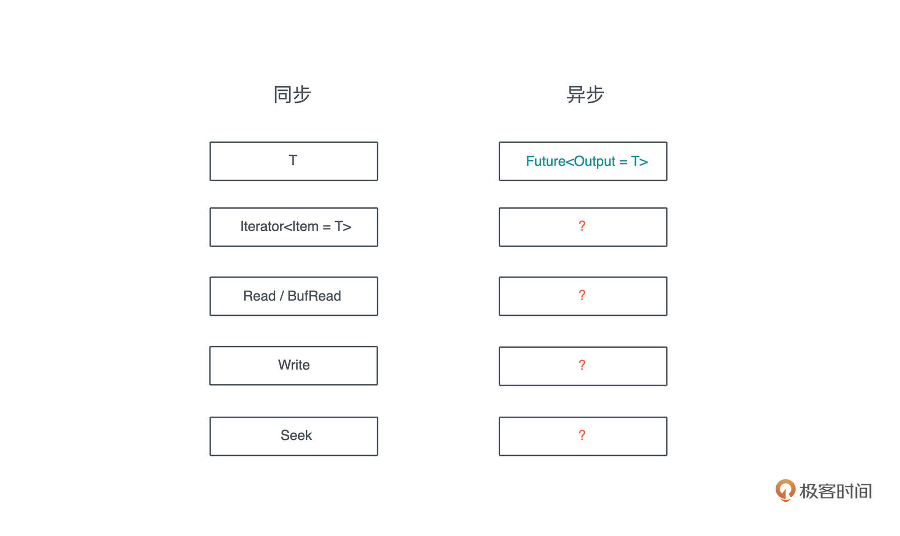

- 00 开篇词 让Rust成为你的下一门主力语言.md
- 01 内存：值放堆上还是放栈上，这是一个问题.md
- 02 串讲：编程开发中，那些你需要掌握的基本概念.md
- 03 初窥门径：从你的第一个Rust程序开始！.md
- 04 get hands dirty：来写个实用的CLI小工具.md
- 05 get hands dirty：做一个图片服务器有多难？.md
- 06 get hands dirty：SQL查询工具怎么一鱼多吃？.md
- 07 所有权：值的生杀大权到底在谁手上？.md
- 08 所有权：值的借用是如何工作的？.md
- 09 所有权：一个值可以有多个所有者么？.md
- 10 生命周期：你创建的值究竟能活多久？.md
- 11 内存管理：从创建到消亡，值都经历了什么？.md
- 12 类型系统：Rust的类型系统有什么特点？.md
- 13 类型系统：如何使用trait来定义接口？.md
- 14 类型系统：有哪些必须掌握的trait？.md
- 15 数据结构：这些浓眉大眼的结构竟然都是智能指针？.md
- 16 数据结构：Vec_T_、&[T]、Box_[T]_ ，你真的了解集合容器么？.md
- 17 数据结构：软件系统核心部件哈希表，内存如何布局？.md
- 18 错误处理：为什么Rust的错误处理与众不同？.md
- 19 闭包：FnOnce、FnMut和Fn，为什么有这么多类型？.md
- 20 4 Steps ：如何更好地阅读Rust源码？.md
- 21 阶段实操（1）：构建一个简单的KV server-基本流程.md
- 22 阶段实操（2）：构建一个简单的KV server-基本流程.md
- 23 类型系统：如何在实战中使用泛型编程？.md
- 24 类型系统：如何在实战中使用trait object？.md
- 25 类型系统：如何围绕trait来设计和架构系统？.md
- 26 阶段实操（3）：构建一个简单的KV server-高级trait技巧.md
- 27 生态系统：有哪些常有的Rust库可以为我所用？.md
- 28 网络开发（上）：如何使用Rust处理网络请求？.md
- 29 网络开发（下）：如何使用Rust处理网络请求？.md
- 30 Unsafe Rust：如何用C++的方式打开Rust？.md
- 31 FFI：Rust如何和你的语言架起沟通桥梁？.md
- 32 实操项目：使用PyO3开发Python3模块.md
- 33 并发处理（上）：从atomics到Channel，Rust都提供了什么工具？.md
- 34 并发处理（下）：从atomics到Channel，Rust都提供了什么工具？.md
- 35 实操项目：如何实现一个基本的MPSC channel？.md
- 36 阶段实操（4）：构建一个简单的KV server-网络处理.md
- 37 阶段实操（5）：构建一个简单的KV server-网络安全.md
- 38 异步处理：Future是什么？它和async_await是什么关系？.md
- 39 异步处理：async_await内部是怎么实现的？.md
- 40 异步处理：如何处理异步IO？.md
- 41 阶段实操（6）：构建一个简单的KV server-异步处理.md
- 42 阶段实操（7）：构建一个简单的KV server-如何做大的重构？.md
- 43 生产环境：真实世界下的一个Rust项目包含哪些要素？.md
- 44 数据处理：应用程序和数据如何打交道？.md
- 45 阶段实操（8）：构建一个简单的KV server-配置_测试_监控_CI_CD.md
- 46 软件架构：如何用Rust架构复杂系统？.md
- 加餐 Rust2021版次问世了！.md
- 加餐 代码即数据：为什么我们需要宏编程能力？.md
- 加餐 宏编程（上）：用最“笨”的方式撰写宏.md
- 加餐 宏编程（下）：用 syn_quote 优雅地构建宏.md
- 加餐 愚昧之巅：你的Rust学习常见问题汇总.md
- 加餐 期中测试：参考实现讲解.md
- 加餐 期中测试：来写一个简单的grep命令行.md
- 加餐 这个专栏你可以怎么学，以及Rust是否值得学？.md
- 大咖助场 开悟之坡（上）：Rust的现状、机遇与挑战.md
- 大咖助场 开悟之坡（下）：Rust的现状、机遇与挑战.md
- 特别策划 学习锦囊（一）：听听课代表们怎么说.md
- 特别策划 学习锦囊（三）：听听课代表们怎么说.md
- 特别策划 学习锦囊（二）：听听课代表们怎么说.md
- 用户故事 绝望之谷：改变从学习开始.md
- 用户故事 语言不仅是工具，还是思维方式.md
- 结束语 永续之原：Rust学习，如何持续精进？.md
40 异步处理：如何处理异步IO？
你好，我是陈天。
前面两讲我们学习了异步处理基本的功能和原理（Future/async/await），但是还没有正式介绍在具体场合下该用哪些工具来处理异步 IO。不过之前讲 trait 的时候，已经了解和使用过一些处理同步 IO 的结构和 trait。
今天我们就对比同步 IO 来学习异步 IO。毕竟在学习某个新知识的时候，如果能够和头脑中已有的知识联系起来，大脑神经元之间的连接就会被激活，学习的效果会事半功倍。
回忆一下同步环境都有哪些结构和 trait呢？首先，单个的值可以用类型 T 表述，一组值可以用 Iterator trait 表述；同步 IO，我们有标准的 Read/Write/Seek trait。顾名思义，Read/Write 是进行 IO 的读写，而 Seek 是在 IO 中前后移动当前的位置。
那么异步呢？我们已经学习到，对于单个的、在未来某个时刻会得到的值，可以用 Future 来表示：

但还不知道一组未来才能得到的值该用什么 trait 来表述，也不知道异步的 Read/Write 该是什么样子。今天，我们就来聊聊这些重要的异步数据类型。
Stream trait
首先来了解一下 Iterator 在异步环境下的表兄弟：Stream。
我们知道，对于 Iterator，可以不断调用其 next() 方法，获得新的值，直到 Iterator 返回 None。Iterator 是阻塞式返回数据的，每次调用 next()，必然独占 CPU 直到得到一个结果，而异步的 Stream 是非阻塞的，在等待的过程中会空出 CPU 做其他事情。
不过和 Future 已经在标准库稳定下来不同，Stream trait 目前还只能在 nightly 版本使用。一般跟 Stream 打交道，我们会使用 futures 库。来对比 Iterator 和 Stream的源码定义：
pub trait Iterator {
type Item;
fn next(&mut self) -> Option<Self::Item>;
fn size_hint(&self) -> (usize, Option<usize>) { ... }
fn map<B, F>(self, f: F) -> Map<Self, F> where F: FnMut(Self::Item) -> B { ... }
... // 还有 67 个方法
}
pub trait Stream {
type Item;
fn poll_next(self: Pin<&mut Self>, cx: &mut Context<'_>) -> Poll<Option<Self::Item>>;
fn size_hint(&self) -> (usize, Option<usize>) { ... }
}
pub trait StreamExt: Stream {
fn next(&mut self) -> Next<'_, Self> where Self: Unpin { ... }
fn map<T, F>(self, f: F) -> Map<Self, F> where F: FnMut(Self::Item) -> T { ... }
... // 还有 41 个方法
}
可以看到，Iterator 把所有方法都放在 Iterator trait 里，而Stream 把需要开发者实现的基本方法和有缺省实现的衍生方法区别开，放在不同的 trait 里。比如 map。
实现 Stream 的时候，和 Iterator 类似，你需要提供 Item 类型，这是每次拿出一个值时，值的类型；此外，还有 poll_next() 方法，它长得和 Future 的 poll() 方法很像，和 Iterator 版本的 next() 的作用类似。
然而，poll_next() 调用起来不方便，我们需要自己处理 Poll 状态，所以，StreamExt 提供了 next() 方法，返回一个实现了 Future trait 的 Next 结构，这样，我们就可以直接通过 stream.next().await 来获取下一个值了。来看 next() 方法以及 Next 结构的实现（源码）：
pub trait StreamExt: Stream {
fn next(&mut self) -> Next<'_, Self> where Self: Unpin {
assert_future::<Option<Self::Item>, _>(Next::new(self))
}
}
// next 返回了 Next 结构
pub struct Next<'a, St: ?Sized> {
stream: &'a mut St,
}
// 如果 Stream Unpin 那么 Next 也是 Unpin
impl<St: ?Sized + Unpin> Unpin for Next<'_, St> {}
impl<'a, St: ?Sized + Stream + Unpin> Next<'a, St> {
pub(super) fn new(stream: &'a mut St) -> Self {
Self { stream }
}
}
// Next 实现了 Future，每次 poll() 实际上就是从 stream 中 poll_next()
impl<St: ?Sized + Stream + Unpin> Future for Next<'_, St> {
type Output = Option<St::Item>;
fn poll(mut self: Pin<&mut Self>, cx: &mut Context<'_>) -> Poll<Self::Output> {
self.stream.poll_next_unpin(cx)
}
}
看个小例子（代码）：
use futures::prelude::*;
#[tokio::main]
async fn main() {
let mut st = stream::iter(1..10)
.filter(|x| future::ready(x % 2 == 0))
.map(|x| x * x);
while let Some(x) = st.next().await {
println!("Got item: {}", x);
}
}
我们使用 stream::iter 生成了一个 Stream，并对其进行 filter/map 的操作。最后，遍历整个 stream，把获得的数据打印出来。从使用的感受来看，Stream 和 Iterator 也很相似，可以对比着来用。
生成 Stream
futures 库提供了一些基本的生成 Stream 的方法，除了上面用到的 iter 方法，还有：
- empty()：生成一个空的 Stream
- once()：生成一个只包含单个值的 Stream
- pending()：生成一个不包含任何值，只返回 Poll::Pending 的 Stream
- repeat()：生成一个一直返回相同值的 Stream
- repeat_with()：通过闭包函数无穷尽地返回数据的 Stream
- poll_fn()：通过一个返回 Poll<Option
> 的闭包来产生 Stream - unfold()：通过初始值和返回 Future 的闭包来产生 Stream
前几种产生 Stream 的方法都很好理解，最后三种引入了闭包复杂一点，我们分别使用它们来实现斐波那契数列，对比一下差异（代码）：
use futures::{prelude::*, stream::poll_fn};
use std::task::Poll;
#[tokio::main]
async fn main() {
consume(fib().take(10)).await;
consume(fib1(10)).await;
// unfold 产生的 Unfold stream 没有实现 Unpin，
// 所以我们将其 Pin<Box<T>> 一下，使其满足 consume 的接口
consume(fib2(10).boxed()).await;
}
async fn consume(mut st: impl Stream<Item = i32> + Unpin) {
while let Some(v) = st.next().await {
print!("{} ", v);
}
print!("\\n");
}
// 使用 repeat_with 创建 stream，无法控制何时结束
fn fib() -> impl Stream<Item = i32> {
let mut a = 1;
let mut b = 1;
stream::repeat_with(move || {
let c = a + b;
a = b;
b = c;
b
})
}
// 使用 poll_fn 创建 stream，可以通过返回 Poll::Ready(None) 来结束
fn fib1(mut n: usize) -> impl Stream<Item = i32> {
let mut a = 1;
let mut b = 1;
poll_fn(move |_cx| -> Poll<Option<i32>> {
if n == 0 {
return Poll::Ready(None);
}
n -= 1;
let c = a + b;
a = b;
b = c;
Poll::Ready(Some(b))
})
}
fn fib2(n: usize) -> impl Stream<Item = i32> {
stream::unfold((n, (1, 1)), |(mut n, (a, b))| async move {
if n == 0 {
None
} else {
n -= 1;
let c = a + b;
// c 作为 poll_next() 的返回值，(n, (a, b)) 作为 state
Some((c, (n, (b, c))))
}
})
}
值得注意的是，使用 unfold 的时候，同时使用了局部变量和 Future，所以生成的 Stream 没有实现 Unpin，我们在使用的时候，需要将其 pin 住。怎么做呢？
Pin<Box
除了上面讲的方法，我们还可以为一个数据结构实现 Stream trait，从而使其支持 Stream。看一个例子（代码）：
use futures::prelude::*;
use pin_project::pin_project;
use std::{
pin::Pin,
task::{Context, Poll},
};
use tokio::{
fs,
io::{AsyncBufReadExt, AsyncRead, BufReader, Lines},
};
/// LineStream 内部使用 tokio::io::Lines
#[pin_project]
struct LineStream<R> {
#[pin]
lines: Lines<BufReader<R>>,
}
impl<R: AsyncRead> LineStream<R> {
/// 从 BufReader 创建一个 LineStream
pub fn new(reader: BufReader<R>) -> Self {
Self {
lines: reader.lines(),
}
}
}
/// 为 LineStream 实现 Stream trait
impl<R: AsyncRead> Stream for LineStream<R> {
type Item = std::io::Result<String>;
fn poll_next(self: Pin<&mut Self>, cx: &mut Context<'_>) -> Poll<Option<Self::Item>> {
self.project()
.lines
.poll_next_line(cx)
.map(Result::transpose)
}
}
#[tokio::main]
async fn main() -> std::io::Result<()> {
let file = fs::File::open("Cargo.toml").await?;
let reader = BufReader::new(file);
let mut st = LineStream::new(reader);
while let Some(Ok(line)) = st.next().await {
println!("Got: {}", line);
}
Ok(())
}
这段代码封装了 Lines 结构，我们可以通过 AsyncBufReadExt 的 lines() 方法，把一个实现了 AsyncBufRead trait 的 reader 转换成 Lines。
你也许注意到代码中引入的 pin_project 库，它提供了一些便利的宏，方便我们操作数据结构里需要被 pin 住的字段。在数据结构中，可以使用 #[pin] 来声明某个字段在使用的时候需要被封装为 Pin
在Lines这个结构内部，异步的 next_line() 方法可以读取下一行，它实际上就是比较低阶的 poll_next_line() 接口的一个封装。
虽然 Lines 结构提供了 next_line()，但并没有实现 Stream，所以我们无法像其他 Stream 那样统一用 next() 方法获取下一行。于是，我们将其包裹在自己的 LineStream 下，并且为 LineStream 实现了 Stream 方法。
注意，由于 poll_next_line() 的结果是 Result<Option
异步 IO 接口
在实现 LineStream 时，我们遇到了两个异步 I/O 接口：AsyncRead 以及 AsyncBufRead。回到开头的那张表，相信你现在已经有大致答案了吧：所有同步的 Read/Write/Seek trait，前面加一个 Async，就构成了对应的异步 IO 接口。
不过，和 Stream 不同的是，如果你对比 futures 下定义的 IO trait 以及 tokio 下定义的 IO trait，会发现它们都有各自的定义，双方并未统一，有些许的差别：
比如 futures 下 AsyncRead 的定义：
pub trait AsyncRead {
fn poll_read(
self: Pin<&mut Self>,
cx: &mut Context<'_>,
buf: &mut [u8]
) -> Poll<Result<usize, Error>>;
unsafe fn initializer(&self) -> Initializer { ... }
fn poll_read_vectored(
self: Pin<&mut Self>,
cx: &mut Context<'_>,
bufs: &mut [IoSliceMut<'_>]
) -> Poll<Result<usize, Error>> { ... }
}
而 tokio 下 AsyncRead 的定义：
pub trait AsyncRead {
fn poll_read(
self: Pin<&mut Self>,
cx: &mut Context<'_>,
buf: &mut ReadBuf<'_>
) -> Poll<Result<()>>;
}
我们看不同之处：tokio 的 poll_read() 方法需要 ReadBuf，而 futures 的 poll_read() 方法需要 &mut [u8]。此外，futures 的 AsyncRead 还多了两个缺省方法。
再看 AsyncWrite。futures 下的 AsyncWrite 接口如下：
pub trait AsyncWrite {
fn poll_write(
self: Pin<&mut Self>,
cx: &mut Context<'_>,
buf: &[u8]
) -> Poll<Result<usize, Error>>;
fn poll_flush(
self: Pin<&mut Self>,
cx: &mut Context<'_>
) -> Poll<Result<(), Error>>;
fn poll_close(
self: Pin<&mut Self>,
cx: &mut Context<'_>
) -> Poll<Result<(), Error>>;
fn poll_write_vectored(
self: Pin<&mut Self>,
cx: &mut Context<'_>,
bufs: &[IoSlice<'_>]
) -> Poll<Result<usize, Error>> { ... }
}
而 tokio 下的 AsyncWrite 的定义：
pub trait AsyncWrite {
fn poll_write(
self: Pin<&mut Self>,
cx: &mut Context<'_>,
buf: &[u8]
) -> Poll<Result<usize, Error>>;
fn poll_flush(
self: Pin<&mut Self>,
cx: &mut Context<'_>
) -> Poll<Result<(), Error>>;
fn poll_shutdown(
self: Pin<&mut Self>,
cx: &mut Context<'_>
) -> Poll<Result<(), Error>>;
fn poll_write_vectored(
self: Pin<&mut Self>,
cx: &mut Context<'_>,
bufs: &[IoSlice<'_>]
) -> Poll<Result<usize, Error>> { ... }
fn is_write_vectored(&self) -> bool { ... }
}
可以看到，AsyncWrite 二者的差距就只有 poll_close() 和 poll_shutdown() 命名上的分别。其它的异步 IO 接口我就不一一举例了，你可以自己去看代码对比。
异步 IO 接口的兼容性处理
为什么 Rust 的异步 IO trait 会有这样的分裂？这是因为在 tokio/futures 库实现的早期，社区还没有形成比较统一的异步 IO trait，不同的接口背后也有各自不同的考虑，这种分裂就沿袭下来。
所以，如果我们使用 tokio 进行异步开发，那么，代码需要使用 tokio::io 下的异步 IO trait。也许，未来等 Async IO trait 稳定并进入标准库后，tokio 会更新自己的 trait。
虽然 Rust 的异步 IO trait 有这样的分裂，你也不必过分担心。tokio-util 提供了相应的Compat功能，可以让你的数据结构在二者之间自如切换。看一个使用 yamux 做多路复用的例子，重点位置详细注释了：
use anyhow::Result;
use futures::prelude::*;
use tokio::net::TcpListener;
use tokio_util::{
codec::{Framed, LinesCodec},
compat::{FuturesAsyncReadCompatExt, TokioAsyncReadCompatExt},
};
use tracing::info;
use yamux::{Config, Connection, Mode, WindowUpdateMode};
#[tokio::main]
async fn main() -> Result<()> {
tracing_subscriber::fmt::init();
let addr = "0.0.0.0:8080";
let listener = TcpListener::bind(addr).await?;
info!("Listening on: {:?}", addr);
loop {
let (stream, addr) = listener.accept().await?;
info!("Accepted: {:?}", addr);
let mut config = Config::default();
config.set_window_update_mode(WindowUpdateMode::OnRead);
// 使用 compat() 方法把 tokio AsyncRead/AsyncWrite 转换成 futures 对应的 trait
let conn = Connection::new(stream.compat(), config, Mode::Server);
// Yamux ctrl stream 可以用来打开新的 stream
let _ctrl = conn.control();
tokio::spawn(
yamux::into_stream(conn).try_for_each_concurrent(None, move |s| async move {
// 使用 compat() 方法把 futures AsyncRead/AsyncWrite 转换成 tokio 对应的 trait
let mut framed = Framed::new(s.compat(), LinesCodec::new());
while let Some(Ok(line)) = framed.next().await {
println!("Got: {}", line);
framed
.send(format!("Hello! I got '{}'", line))
.await
.unwrap();
}
Ok(())
}),
);
}
}
yamux 是一个类似 HTTP/2 内部多路复用机制的协议，可以让你在一个 TCP 连接上打开多个逻辑 yamux stream，而yamux stream 之间并行工作，互不干扰。
yamux crate 在实现的时候，使用了 futures 下的异步 IO 接口。但是当我们使用 tokio Listener 接受一个客户端，得到对应的 TcpStream 时，这个 TcpStream 使用的是 tokio 下的异步 IO 接口。所以我们需要 tokio_util::compat 来协助接口的兼容。
在代码中，首先我用 stream.compat() 生成一个 Compat 结构，供 yamux Connection 使用：
let conn = Connection::new(stream.compat(), config, Mode::Server);
之后，拿到 yamux connection 下所有 stream 进行处理时，我们想用 tokio 的 Frame 和 Codec 一行行读取和写入，也就需要把使用 futures 异步接口的 yamux stream，转换成使用 tokio 接口的数据结构，这样就可以用在 Framed::new() 中：
let mut framed = Framed::new(s.compat(), LinesCodec::new());
如果你想运行这段代码，可以看这门课的 GitHub repo 下的完整版，包括依赖以及客户端的代码。
实现异步 IO 接口
异步 IO 主要应用在文件处理、网络处理等场合，而这些场合的数据结构都已经实现了对应的接口，比如 File 或者 TcpStream，它们也已经实现了 AsyncRead/AsyncWrite。所以基本上，我们不用自己实现异步 IO 接口，只需要会用就可以了。
不过有些情况，我们可能会把已有的数据结构封装在自己的数据结构中，此时，也应该实现相应的异步 IO 接口（代码）：
use anyhow::Result;
use pin_project::pin_project;
use std::{
pin::Pin,
task::{Context, Poll},
};
use tokio::{
fs::File,
io::{AsyncRead, AsyncReadExt, ReadBuf},
};
#[pin_project]
struct FileWrapper {
#[pin]
file: File,
}
impl FileWrapper {
pub async fn try_new(name: &str) -> Result<Self> {
let file = File::open(name).await?;
Ok(Self { file })
}
}
impl AsyncRead for FileWrapper {
fn poll_read(
self: Pin<&mut Self>,
cx: &mut Context<'_>,
buf: &mut ReadBuf<'_>,
) -> Poll<std::io::Result<()>> {
self.project().file.poll_read(cx, buf)
}
}
#[tokio::main]
async fn main() -> Result<()> {
let mut file = FileWrapper::try_new("./Cargo.toml").await?;
let mut buffer = String::new();
file.read_to_string(&mut buffer).await?;
println!("{}", buffer);
Ok(())
}
这段代码封装了 tokio::fs::File 结构，我们想读取内部的 file 字段，但又不想把 File 暴露出来，因此实现了 AsyncRead trait。
Sink trait
在同步环境下往 IO 中发送连续的数据，可以一次性发送，也可以使用 Write trait 多次发送，使用起来并没有什么麻烦；但在异步 IO 下，做同样的事情，我们需要更方便的接口。因此异步IO还有一个比较独特的 Sink trait，它是一个用于发送一系列异步值的接口。
看 Sink trait 的定义：
pub trait Sink<Item> {
type Error;
fn poll_ready(
self: Pin<&mut Self>,
cx: &mut Context<'_>
) -> Poll<Result<(), Self::Error>>;
fn start_send(self: Pin<&mut Self>, item: Item) -> Result<(), Self::Error>;
fn poll_flush(
self: Pin<&mut Self>,
cx: &mut Context<'_>
) -> Poll<Result<(), Self::Error>>;
fn poll_close(
self: Pin<&mut Self>,
cx: &mut Context<'_>
) -> Poll<Result<(), Self::Error>>;
}
pub trait SinkExt<Item>: Sink<Item> {
...
fn send(&mut self, item: Item) -> Send<'_, Self, Item> where Self: Unpin { ... }
...
}
和 Stream trait 不同的是，Sink trait 的 Item 是 trait 的泛型参数，而不是关联类型。一般而言，当 trait 接受某个 input，应该使用泛型参数，比如 Add
Item 对于 Sink 来说是输入，所以使用泛型参数是正确的选择。因为这也意味着，在发送端，可以发送不同类型的数据结构。
看上面的定义源码，Sink trait 有四个方法：
- poll_ready()：用来准备 Sink 使其可以发送数据。只有 poll_ready() 返回 Poll::Ready(Ok(())) 后，Sink 才会开展后续的动作。poll_ready() 可以用来控制背压。
- start_send()：开始发送数据到 Sink。但是start_send() 并不保证数据被发送完毕，所以调用者要调用 poll_flush() 或者 poll_close() 来保证完整发送。
- poll_flush()：将任何尚未发送的数据 flush 到这个 Sink。
- poll_close()：将任何尚未发送的数据 flush 到这个 Sink，并关闭这个 Sink。
其中三个方法和 Item 是无关的，这会导致，如果不同的输入类型有多个实现，Sink的poll_ready、poll_flush 和 poll_close 可能会有重复的代码。所以一般我们在使用 Sink 时，如果确实需要处理不同的数据类型，可以用 enum 将它们统一（感兴趣的话，可以进一步阅读这个讨论）。
我们就用一个简单的 FileSink 的例子，看看如何实现这些方法。tokio::fs 下的 File 结构已经实现了 AsyncRead/AsyncWrite，我们只需要在 Sink 的几个方法中调用 AsyncWrite 的方法即可（代码）：
use anyhow::Result;
use bytes::{BufMut, BytesMut};
use futures::{Sink, SinkExt};
use pin_project::pin_project;
use std::{
pin::Pin,
task::{Context, Poll},
};
use tokio::{fs::File, io::AsyncWrite};
#[pin_project]
struct FileSink {
#[pin]
file: File,
buf: BytesMut,
}
impl FileSink {
pub fn new(file: File) -> Self {
Self {
file,
buf: BytesMut::new(),
}
}
}
impl Sink<&str> for FileSink {
type Error = std::io::Error;
fn poll_ready(self: Pin<&mut Self>, _cx: &mut Context<'_>) -> Poll<Result<(), Self::Error>> {
Poll::Ready(Ok(()))
}
fn start_send(self: Pin<&mut Self>, item: &str) -> Result<(), Self::Error> {
let this = self.project();
eprint!("{}", item);
this.buf.put(item.as_bytes());
Ok(())
}
fn poll_flush(mut self: Pin<&mut Self>, cx: &mut Context<'_>) -> Poll<Result<(), Self::Error>> {
// 如果想 project() 多次，需要先把 self reborrow 一下
let this = self.as_mut().project();
let buf = this.buf.split_to(this.buf.len());
if buf.is_empty() {
return Poll::Ready(Ok(()));
}
// 写入文件
if let Err(e) = futures::ready!(this.file.poll_write(cx, &buf[..])) {
return Poll::Ready(Err(e));
}
// 刷新文件
self.project().file.poll_flush(cx)
}
fn poll_close(self: Pin<&mut Self>, cx: &mut Context<'_>) -> Poll<Result<(), Self::Error>> {
let this = self.project();
// 结束写入
this.file.poll_shutdown(cx)
}
}
#[tokio::main]
async fn main() -> Result<()> {
let file_sink = FileSink::new(File::create("/tmp/hello").await?);
// pin_mut 可以把变量 pin 住
futures::pin_mut!(file_sink);
file_sink.send("hello\\n").await?;
file_sink.send("world!\\n").await?;
file_sink.send("Tyr!\\n").await?;
Ok(())
}
对于 poll_ready() 方法，直接返回 Poll::Ready(Ok(()))。
在 start_send() 方法中，我们把传入的 item，写入 FileSink 的 BytesMut 中。然后在 poll_flush() 时，我们拿到 buf，把已有的内容调用 split_to()，得到一个包含所有未写入文件的新 buffer。这个 buffer 和 self 无关，所以传入 poll_write() 时，不会有对 self 的引用问题。
在写入文件后，我们再次调用 poll_flush() ，确保写入的内容刷新到磁盘上。最后，在 poll_close() 时调用 poll_shutdown() 关闭文件。
这段代码虽然实现了 Sink trait，也展示了如何实现 Sink 的几个方法，但是这么简单的一个问题，处理起来还是颇为费劲。有没有更简单的方法呢？
有的。futures 里提供了 sink::unfold 方法，类似 stream::unfold，我们来重写上面的 File Sink 的例子（代码）：
use anyhow::Result;
use futures::prelude::*;
use tokio::{fs::File, io::AsyncWriteExt};
#[tokio::main]
async fn main() -> Result<()> {
let file_sink = writer(File::create("/tmp/hello").await?);
// pin_mut 可以把变量 pin 住
futures::pin_mut!(file_sink);
if let Err(_) = file_sink.send("hello\\n").await {
println!("Error on send");
}
if let Err(_) = file_sink.send("world!\\n").await {
println!("Error on send");
}
Ok(())
}
/// 使用 unfold 生成一个 Sink 数据结构
fn writer<'a>(file: File) -> impl Sink<&'a str> {
sink::unfold(file, |mut file, line: &'a str| async move {
file.write_all(line.as_bytes()).await?;
eprint!("Received: {}", line);
Ok::<_, std::io::Error>(file)
})
}
可以看到，通过 unfold 方法，我们不需要撰写 Sink 的几个方法了，而且可以在一个返回 Future 的闭包中来提供处理逻辑，这就意味着我们可以不使用 poll_xxx 这样的方法，直接在闭包中使用这样的异步函数：
file.write_all(line.as_bytes()).await?
你看，短短 5 行代码，就实现了刚才五十多行代码要表达的逻辑。
小结
今天我们学习了和异步 IO 相关的 Stream/Sink trait，以及和异步读写相关的 AsyncRead/AsyncWrite 等 trait。在学习异步 IO 时，很多内容都可以和同步 IO 的处理对比着学，这样事半功倍。
在处理异步 IO 时，底层的 poll_xxx() 函数很难写，因为它的约束很多。好在有 pin_project 这个项目，用宏帮我们解决了很多关于 Pin/Unpin 的问题。
一般情况下，我们不太需要直接实现 Stream/Sink/AsyncRead/AsyncWrite trait，如果的确需要，先看看有没有可以使用的辅助函数，比如通过 poll_fn/unfold 创建 Stream、通过 unfold 创建 Sink。
思考题
我们知道 tokio:sync::mpsc 下有支持异步的 MPSC channel，生产者可以通过 send() 发送消息，消费者可以通过 recv() 来接收消息。你能不能为其封装 Sink 和 Stream 的实现，让 MPSC channel 可以像 Stream/Sink 一样使用？（提示：tokio-stream 有 ReceiverStream 的实现）。
欢迎在留言区分享你的思考和学习收获，感谢收听，恭喜你已经完成了rust学习的40次打卡，如果觉得有收获，也欢迎分享给你身边的朋友，邀他一起讨论。我们下节课见。
© 2019 - 2023 Liangliang Lee. Powered by Vert.x and hexo-theme-book.